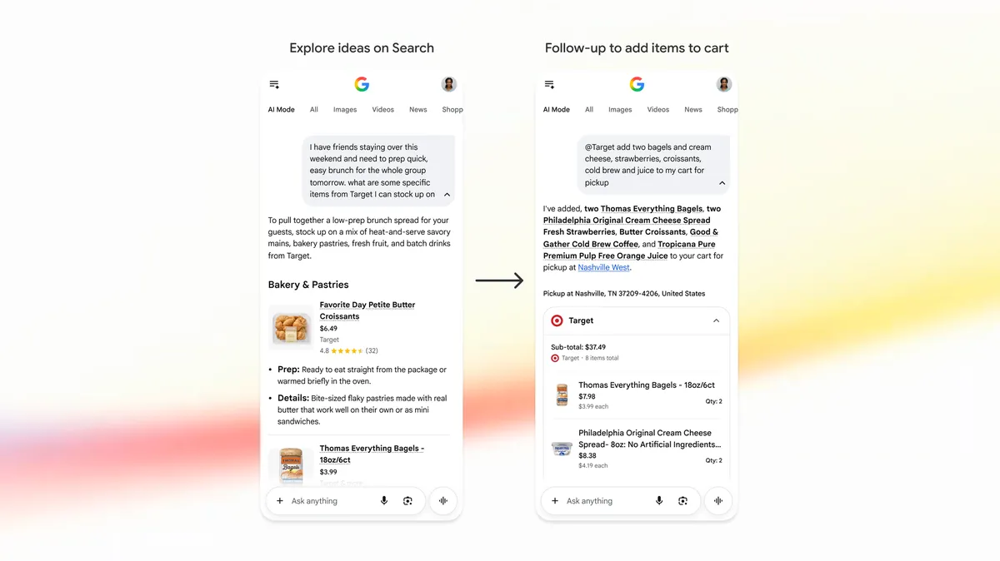
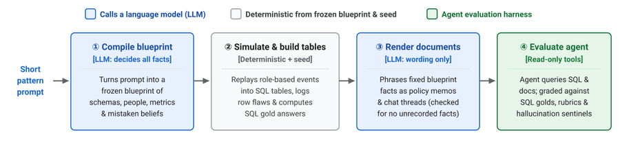
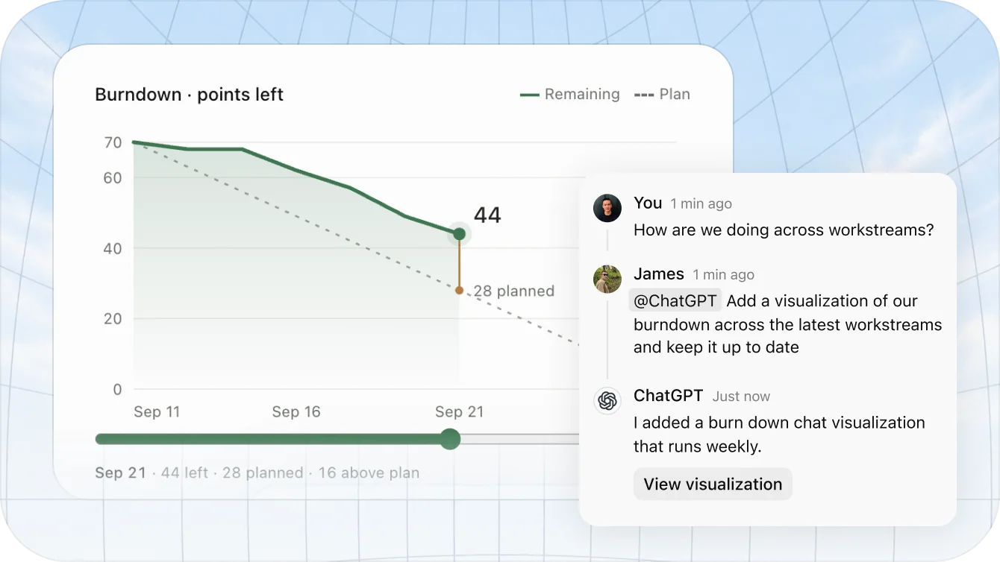

AI NEWS ISSUE 54
구글 검색과 Gemini에서 식료품 주문부터 결제까지
주말 브런치 메뉴를 물은 자리에서 베이글과 크림치즈를 주문합니다. 구글 클라우드에서는 업무 기록을 제대로 읽는 에이전트를 가려내려고 낡은 문서와 정답표까지 갖춘 가상 회사를 만들었습니다.
AT A GLANCE
30초 요약
- 구글이 미국에서 Target·Albertsons·Safeway·Shaw’s 등의 식료품 주문과 결제를 검색과 Gemini 앱에 순차 연결합니다. 주문을 받는 판매자는 각 유통사입니다.
- 구글 클라우드는 잘못된 업무 문서와 중복 거래까지 담은 가상 기업을 만들었습니다. Watch Duty에서는 Gemini가 잡음에 묻힌 출동 무전을 찾아 사람이 확인할 시간을 벌어 줍니다.
- OpenAI는 만 18세 이상 Plus 이용자에게 ChatGPT Space를 순차 개방했습니다. 별도로, 제3자에게 OpenAI 모델 직접 접근을 제공하는 중개 서비스의 사전 승인 요건이 시행됐습니다.
자료 확인 2026년 11월 21일 한국시간 기준. 발표일과 사건 날짜는 각 원문의 표기를 따릅니다.
GOOGLE · CONNECTED APPS
브런치 메뉴를 고른 뒤, 같은 대화에서 장을 봅니다
구글이 공개한 화면에서 사용자는 주말에 친구들을 대접할 간단한 브런치 메뉴를 묻습니다. 답을 읽은 뒤 Target을 불러 베이글과 크림치즈, 딸기 등을 담아 달라고 하자 픽업할 상품과 소계가 나타납니다. 구글은 11월 20일, 미국에서 이런 식료품 주문과 결제를 돕는 Connected Apps를 검색과 Gemini 앱에 순차 제공한다고 발표했습니다. Target과 함께 Albertsons, Safeway, Shaw’s가 이름을 올렸습니다. 구글의 식료품 연동 발표 ↗

거래를 이어 주는 공통 규격은 범용 커머스 프로토콜(UCP)입니다. 쇼핑 도구와 판매자 시스템이 상품·장바구니·결제 정보를 주고받으며, 고객에게 상품을 판매하는 주체는 유통사로 유지됩니다. Target은 고객이 구글에서 구매를 확인하거나 장바구니를 Target 사이트로 가져가 결제할 수 있다고 안내합니다. 구글 판매자 도움말 ↗ · Target의 구매 절차 ↗
이번에 확대된 것은 식료품 장보기용 앱 연동입니다. 구글은 1월에 UCP를 공개하고 3월에 여러 품목을 한 장바구니에 담는 기능을 발표했습니다. Target도 6월부터 구글 검색과 Gemini에서 자사 상품을 구매하는 절차를 안내했습니다. 구글의 3월 규격 업데이트 ↗ · Target의 6월 안내 ↗
같은 발표에서 미국 검색에 연결되는 다른 앱들도 소개됐습니다. 신용정보를 확인하는 Experian은 Gemini에서 검색으로 확대되고, H&R Block에서는 세금과 환급 예상액을 계산할 수 있습니다. 집수리 전문가를 찾는 Angi와 Thumbtack의 계정 연결은 발표 시점 기준 몇 주 뒤로 예고됐습니다. 서비스별 제공 시점 ↗
GOOGLE CLOUD
틀린 사내 문서가 검색돼도 정답을 찾을 수 있을까요?
가상의 브레이크 제조사에서 교대 감독자와 재무팀이 설비 정지 시간을 다르게 셉니다. 에이전트가 오래된 인수인계 메모를 먼저 읽으면 SQL이 문제없이 실행돼도 답은 틀릴 수 있습니다. 구글 클라우드는 11월 20일, 고객 데이터를 복사하지 않고 이런 상황을 만드는 내부 평가용 시뮬레이터를 소개했습니다. 구글 클라우드 연구진의 설명 ↗
먼저 모델이 공식 지표와 직원이 잘못 알고 있는 규칙까지 가상 회사의 설계도에 적습니다. 설계도와 난수 시드를 고정하면 같은 업무 사건에서 같은 테이블과 정답 SQL이 나옵니다. 모델은 정해진 사실을 메모와 대화문으로 풀어 씁니다. 평가받는 에이전트는 읽기 전용으로 문서와 테이블을 조회하고, 채점기는 따로 보관한 정답과 비교합니다.

연구진은 일부러 중복 행을 넣고, 회사에 없는 지표를 묻기도 했습니다. 이때는 ‘그 지표를 찾을 수 없다’는 답이 정답입니다. 연구진에 따르면 통계적 특성과 정답 SQL을 100개 넘는 항목으로 점검했고, 내부 비교에서 에이전트 설정별 정확도 순위가 사람이 작성한 과제에서와 같았습니다. 실제 고객 환경과 짝지어 비교하는 연구는 진행 중입니다. 검증 항목과 연구의 한계 ↗
CHATGPT SPACE
매주 다시 만드는 보고서를 한 페이지에서 갱신합니다
OpenAI는 11월 20일, 전 세계 만 18세 이상 Plus 이용자에게 ChatGPT Space를 순차 제공하기 시작했습니다. 기존 Library 자리에 생기는 Space에서 여러 사람이 페이지와 슬라이드를 함께 고치고, 댓글에서 ChatGPT를 불러 수정을 요청할 수 있습니다. 페이지는 웹·데스크톱과 iOS·Android에서 만들고 편집할 수 있습니다. 11월 20일 릴리스 노트 ↗

주간보고에 연결한 앱의 결정 사항을 반영하도록 페이지 갱신을 설정할 수 있습니다. 팀원이 결과를 함께 보려면 해당 페이지의 열람 권한과 Space가 활성화된 Plus·Pro·Business·Enterprise 계정이 모두 필요합니다. 11월 20일 안내 기준으로 공유 페이지와 슬라이드는 무료 계정에서 열 수 없고 공개 링크도 지원하지 않습니다. 공유 조건 ↗
WATCH DUTY · GOOGLE.ORG
무전에 묻힌 출동 신호를 찾고, 경보는 사람이 보냅니다
7월 미국 워싱턴주의 Railroad Fire가 밤에 번질 때, 첫 911 출동 무전에는 잡음이 섞여 있었습니다. 구글에 따르면 Gemini 기반 도구가 무전을 받아써 30초 안에 담당자에게 표시했습니다. 비영리 산불 경보 서비스 Watch Duty의 담당자가 화재를 확인하고 주민에게 긴급 경보를 보냈습니다. 11월 20일 공개된 것은 이 대응을 돌아본 운영 사례입니다. 구글의 7월 화재 사례 ↗
새 출동 신호를 담당자에게 알리기까지의 시간입니다. 이후 사람이 상황을 검증합니다.
무전 내용을 받아쓸 때의 오류율입니다. 두 수치의 차이는 15.66%포인트입니다.
구글 엔지니어들과 Watch Duty는 과거 무전 녹음 2만 시간 이상을 활용해 도구를 만들었습니다. 구글이 밝힌 운영 규모는 활성 무전 피드 약 400개, 하루 받아쓰는 음성 200시간 이상입니다. 이 수치들은 협업에 참여한 구글이 발표했습니다. 11월 운영 수치 ↗ · Watch Duty의 4월 협업 발표 ↗
OPENAI · 이용정책
외부에 모델 직접 접근을 제공하려면 사전 승인을 받습니다
OpenAI가 10월 21일 발표한 개정 이용정책이 11월 20일 시행됐습니다. 제3자가 OpenAI 모델을 직접 호출할 수 있게 하는 중개 플랫폼이나 서비스는 접근을 제공하기 전에 OpenAI의 검토와 승인을 받아야 합니다. 예를 들어 외부 개발자에게 모델 호출을 제공하는 게이트웨이가 여기에 해당합니다. 자사 앱에서 모델을 호출해 상품 설명을 요약하는 기능은 그 통합만으로 승인 대상이 되지 않습니다. 10월 발표 ↗ · 시행된 한국어 이용정책 ↗
모델을 평가할 때는 결과를 어디에 쓰느냐도 중요합니다. 정책은 제한을 지키는 범위에서 모델 평가와 벤치마킹을 허용합니다. 반면 OpenAI 모델·서비스를 대체할 모델의 학습용으로 OpenAI 모델이나 출력을 써서 정답·순위·보상 신호 또는 강화학습 환경을 만들거나 제공하는 행위에는 제한이 적용됩니다. 자체 업무 평가에서 나온 결과라도 나중에 그 학습 목적으로 넘기는 경우가 포함됩니다. 모델 학습 및 개발 조항 ↗
OUR VIEW
장바구니에 담긴 상품과 장부에 잡힌 매출은 어떻게 확인할까요?
손님이 베이글 두 봉지를 골랐는데 결제 직전 한 봉지만 남았다면, 답을 아는 쪽은 매장의 재고 시스템입니다. 주문을 연결하는 개발팀은 장바구니를 만들 때의 수량·금액과 결제 직전 값을 비교하고, 바뀐 조건을 손님이 다시 확인할 자리를 마련할 수 있습니다.
결제 뒤에는 다른 질문이 남습니다. 결제 알림이 두 번 왔을 때 보고서 매출도 두 배가 될까요? 구글 클라우드의 가상 회사에서 빌려올 아이디어는, 테스트 데이터를 늘리기 전에 어떤 거래를 한 번으로 세는지 정해 두는 것입니다. 그러면 에이전트가 내놓은 숫자를 실제 결제 기록과 대조할 수 있습니다.
OUR LAB · 실험 제안
가상 상점의 10월 순수납액은 얼마일까요?
가상 상점의 정산 담당자가 “10월에 실제로 받은 돈에서 돌려준 돈을 빼면 얼마인가요?”라고 묻습니다. 현행 정산 규칙은 결제·환불이 각각 승인된 달에 반영하고, 같은 거래 번호로 다시 온 통지는 한 번만 셉니다. 아래 세 기록만 있을 때의 기대 답을 먼저 적어 봅니다.
| 기록 | 적용할 규칙 | 10월 반영액 |
|---|---|---|
| 10월 3일 부분 환불 | 9월 주문에서 4,000원을 돌려줬습니다. 환불 승인일은 10월입니다. | −4,000원 |
| 10월 14일 결제 | 30,000원 결제의 승인 통지가 같은 거래 번호로 두 번 왔습니다. | +30,000원 |
| 11월 1일 부분 환불 | 10월 14일 결제에서 5,000원을 돌려줬습니다. 11월 장부에 반영합니다. | 0원 |
| 10월 순수납액 | 26,000원 | |
개발자는 가상 주문 100건에 결제·쿠폰·환불 이력을 붙이고, 시행일과 담당자가 적힌 정책 문서 다섯 건을 준비합니다. 주문일로 환불을 집계하던 옛 문서도 남겨 둡니다. 정답 SQL과 정책 버전은 채점기에만 두고, 에이전트에는 읽기 전용 조회와 문서 검색만 허용합니다.
같은 모델에 같은 질문을 두 번 묻습니다. 한 번은 자료를 찾아 바로 계산하게 하고, 다른 한 번은 집계하기 전에 지표 정의·시행일·거래 키를 먼저 확인하게 합니다. 각 시도는 새 대화에서 시작합니다. 답에는 금액과 적용한 문서, 집계에 쓴 SQL을 남기게 합니다. 회사에 정의가 없는 지표를 물었을 때의 기대 답은 ‘정의 없음’입니다.
조정에 쓴 거래와 별도로 새 시드로 만든 거래에 두 방식을 적용합니다. 금액 질문은 정답 SQL과 일치한 건수, 미정의 지표 질문은 숫자를 지어낸 건수를 따로 셉니다. 중복 합산·지난 정책 적용·환불 월 오류를 구분해 기록하고, 정답률이 유지되면서 검토 시간까지 줄었는지 봅니다. 재시도 비용과 수정 시간도 건별로 남기면 다음 모델에서 같은 조건으로 비교할 수 있습니다.
SOURCES